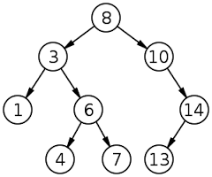

Binary Search Tree
Introduction
A binary tree is made of nodes, where each node contains a "left" pointer, a "right" pointer, and a data element. The "root" pointer points to the topmost node in the tree. The left and right pointers recursively point to smaller "subtrees" on either side. A null pointer represents a binary tree with no elements - the empty tree. The formal recursive definition is: a binary tree is either empty (represented by a null pointer), or is made of a single node, where the left and right pointers (recursive definition ahead) each point to a binary tree.
Binary search trees keep their keys in sorted order, so that lookup and other operations can use the principle of binary search: when looking for a key in a tree (or a place to insert a new key), they traverse the tree from root to leaf, making comparisons to keys stored in the nodes of the tree and deciding, based on the comparison, to continue searching in the left or right subtrees.

Functions
- Insert - Given a binary search tree and a number, insert a new node with the given number into the tree in the correct place.
- Delete - Delete a tree node with certain value. If the node has two children, replace the data of this node with the smallest data of the right subtree and recursively delete that node.
- Search - Retrieve the data of a tree node.
Algorithm for Function
Inserting a node into binary search tree
public void insert(T data){
root = insert(root, data);
}
private Node
{
if (p == null)
return new Node
if (compare(toInsert, p.data) == 0)
return p;
if (compare(toInsert, p.data) < 0)
p.left = insert(p.left, toInsert);
else
p.right = insert(p.right, toInsert);
return p;
}
Deleting a node from binary search tree
public void delete(T toDelete){
root = delete(root, toDelete);
}
private Node
{
if (p == null) throw new RuntimeException("cannot delete.");
else
if (compare(toDelete, p.data) < 0)
p.left = delete (p.left, toDelete);
else
if (compare(toDelete, p.data) > 0)
p.right = delete (p.right, toDelete);
else
{
if (p.left == null) return p.right;
else
if (p.right == null) return p.left;
else
{
// get data from the rightmost node in the left subtree
p.data = retrieveData(p.left);
// delete the rightmost node in the left subtree
p.left = delete(p.left, p.data) ;
}
}
return p;
}
private T retrieveData(Node
{
while (p.right != null) p = p.right;
return p.data;
}
Searching a node from binary search tree
public boolean search(T toSearch){
return search(root, toSearch);
}
private boolean search(Node
{
if (p == null)
return false;
else
if (compare(toSearch, p.data) == 0)
return true;
else
if (compare(toSearch, p.data) < 0)
return search(p.left, toSearch);
else
return search(p.right, toSearch);
}
Applications
- Binary Search Tree - Used in many search applications where data is constantly entering/leaving, such as the map and set objects in many languages' libraries.
- Binary Space Partition - Used in almost every 3D video game to determine what objects need to be rendered.
- Binary Trees - Used in almost every high-bandwidth router for storing router-tables.
- Hash Trees - Used in p2p programs and specialized image-signatures in which a hash needs to be verified, but the whole file is not available.
- Heaps - Used in implementing efficient priority-queues, which in turn are used for scheduling processes in many operating systems. Also used in heap-sort.
- Huffman Coding Tree (Chip Uni) - Used in compression algorithms, such as those used by the .jpeg and .mp3 file-formats.
- GGM Trees - Used in cryptographic applications to generate a tree of pseudo-random numbers.
- Syntax Tree - Constructed by compilers and (implicitly) calculators to parse expressions.
- Treap - Randomized data structure used in wireless networking and memory allocation.
- T-tree - Though most databases use some form of B-tree to store data on the drive, databases which keep all (most) their data in memory often use T-trees to do so.
Run Code